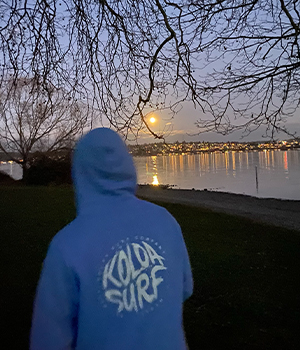

Hi! I’m Andrew, a second-year at Case Western Reserve University studying computer science and mathematics. I grew up in Seattle, WA and Hong Kong. My interests lie in artificial intelligence, algorithms, and finance. As such, I am currently involved in several research projects that lie at the heart of their intersections (see publications). In my free time, I like to solve puzzles, play piano (current favorite: Liszt), and be with my dog. I also like to write down things of interest – or of no interest – in my blog.
{kind=link}
With the support of Shuai Xu and Vipin Chaudhary, I founded and currently lead quant[at]CWRU, a research group of undergraduates and post-grads focused on integrating current paradigms in machine learning to solve hard financial tasks. I also work with:
- Professor Zhaozhuo Xu (on faithfulness in large language models)
- Reseachers at Rice AI and MIT (on network pruning and editing)
- GammaTau (on mechanistic interpretability and more language model stuff) – an undergraduate research group started by my friends Noah Shinn and Federico Cassano.
Broadly, some questions in AI I am interested in addressing include:
- How can we ensure that the systems we build are faithful and secure?
- Models improve with size, yet they are often overparametrized and inefficient. How do we effectively balance this scale-bloat tradeoff?
- How do neural networks fundamentally reason, think, and learn?
- On that topic, where do we draw the line for artificial general intelligence as it grows nearer?
Previously, I worked with Angel Alban to create better healthcare systems as an intern for Zventus.